INT–α: Identity Receipt
Instructor: Kang ZhangPersonal Project
Tools & Technologies: vision-capable large language models (LLMs), Node.js, structured JSON output, controlled vocabularies, validation and repair, ESC/POS thermal printing, 58 mm thermal printer, custom electronics, large-format camera
Introduction
Identity Receipt is an interactive apparatus built around a 5×7 large-format camera that turns AI-generated judgments into physical records. When a participant stands in front of the camera, the system captures a portrait, sends it to a vision-capable language model, and generates a fictional administrative assessment. The result is then compiled into a thermal receipt, printed through the camera, torn free by the operator, and handed to the photographed person.
Rather than presenting algorithmic classification only as an on-screen result, the project gives it a material endpoint: a finished document that can be held, read, questioned, and passed between people.
The project explores the gap between the completion of a computational record and the acceptance of what that record claims.
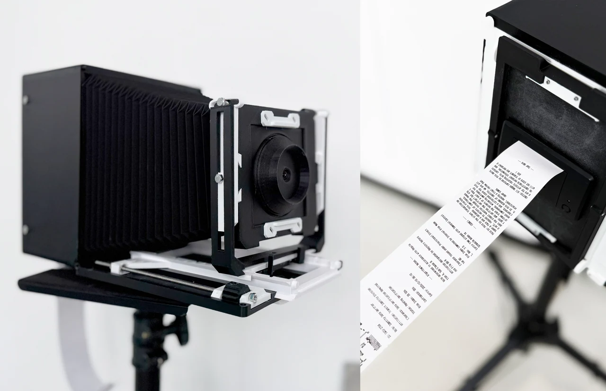
Concept
AI-generated judgments often arrive through interfaces that make them appear complete. A value has been selected, formatted, and delivered, creating the impression that the process has reached a stable conclusion.
But completion does not necessarily mean acceptance.
By embedding the system inside a 5×7 large-format camera, the project transforms portrait-taking into an encounter with computational classification. The camera does not produce a photographic negative. Instead, it produces a fictional administrative judgment addressed to the person being photographed.
The receipt has reached a visible endpoint once it is printed and handed over, while its evidence, legitimacy, and possible use remain open to question.
Repeated system runs also reveal that a stable document layout can contain values with very different patterns of recurrence. The visual completeness of the receipt therefore does not imply stable production behind it.
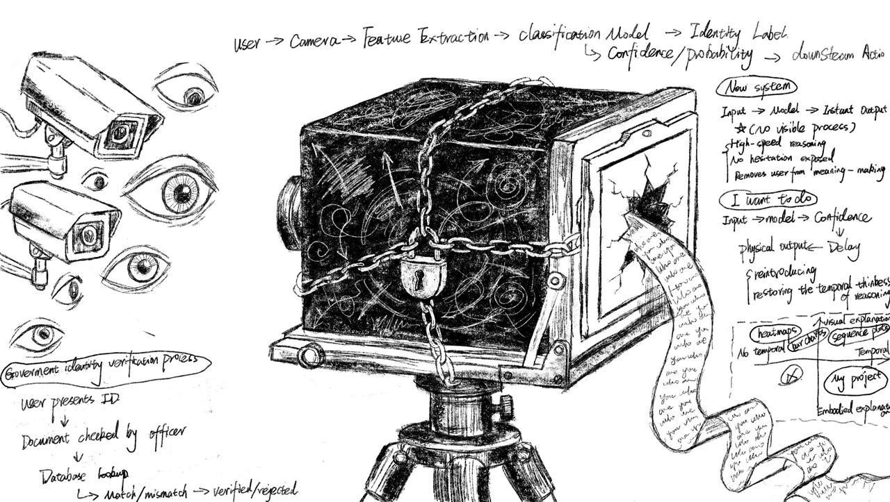
System
Capture
The original shutter initiates the encounter. A digital camera module inside the large-format camera captures the participant’s portrait.
Generation
The portrait is sent to a vision-capable language model, which generates a fictional administrative assessment using structured fields such as Role, Affiliation, Clearance, Status, Risk, and Confidence.
Validation & Compilation
The model return is parsed, checked for required fields and valid ranges, repaired when necessary, mapped to controlled vocabularies, and compiled into a consistent receipt layout.
Print & Handoff
The completed record is sent to a 58 mm thermal printer positioned at the camera’s film-plane opening. The operator tears the printed receipt free and hands it to the photographed person.
The full production chain follows seven linked stages:
Capture → Generate → Parse → Validate + Repair → Map Vocabulary → Compile → Print
Fabricated Identity Receipts
Each receipt contains:
- an ASCII portrait
- a session identifier
- fictional Role and Affiliation assignments
- Clearance and Status
- Risk and Confidence scores
- a short procedural rationale
The receipt gives varied model outputs a consistent documentary form. Its visual completeness can make a generated judgment appear settled even when the values behind that form vary across repeated runs.
The project uses this contradiction to examine how algorithmic judgments gain authority through format, materiality, and delivery.
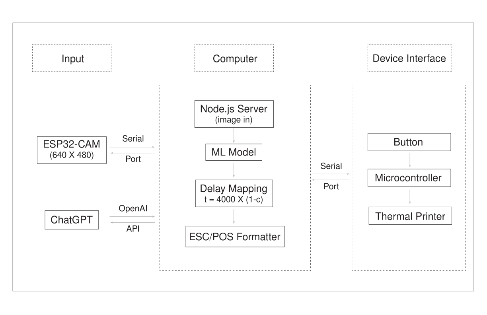
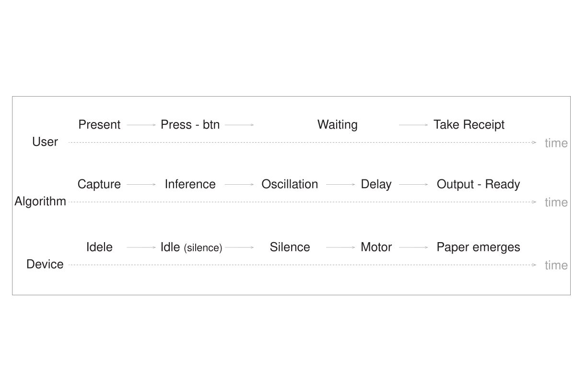
Study
A 96-person study compared two complete camera-to-receipt generation bundles.
Participants could perceive a printed judgment as finished while simultaneously wanting to verify its source and expecting human review. The more procedural generation bundle received higher ratings for official-document character, systematic process, finished judgment, and institutional presence.
Written responses also showed that the same document features could produce opposite interpretations. Precise numerical values suggested calculation to one participant, while another interpreted the same kind of precision as evidence of fabrication.
These responses suggest that a completed document does not settle how its contents will be understood or accepted.
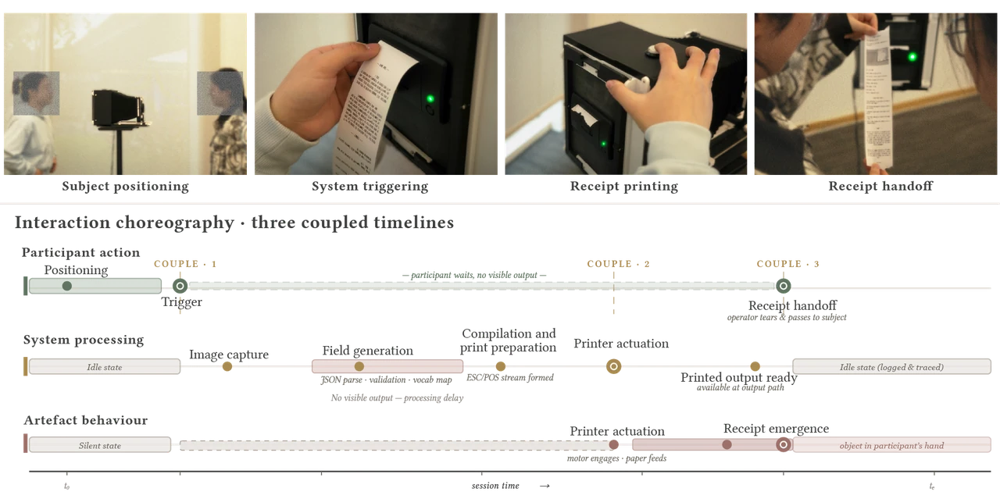
Final Prototype
The final system integrates portrait capture, local computation, custom electronics, and a 58 mm thermal printer into a 5×7 large-format camera.
The original shutter begins the interaction, while the camera’s film-plane opening becomes the point from which the generated judgment is issued.
Rather than producing a photographic negative, the camera produces a detachable administrative record—turning algorithmic classification into something that can be physically received, reread, questioned, and transferred between people.
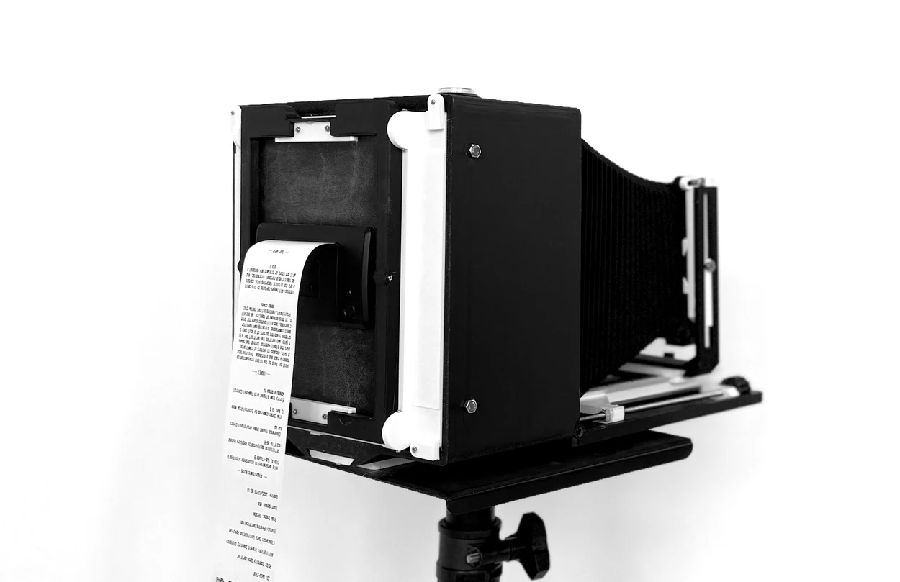
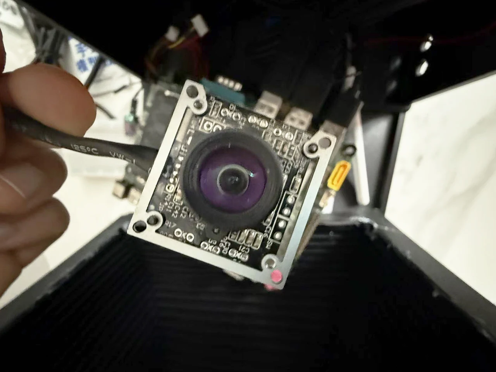
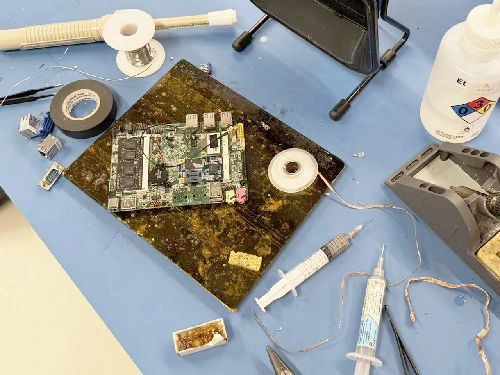
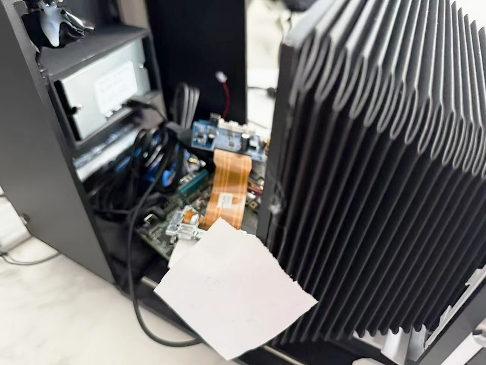
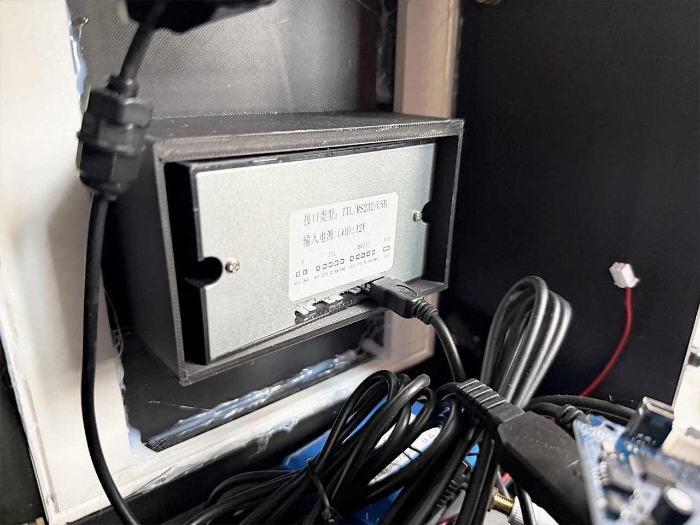
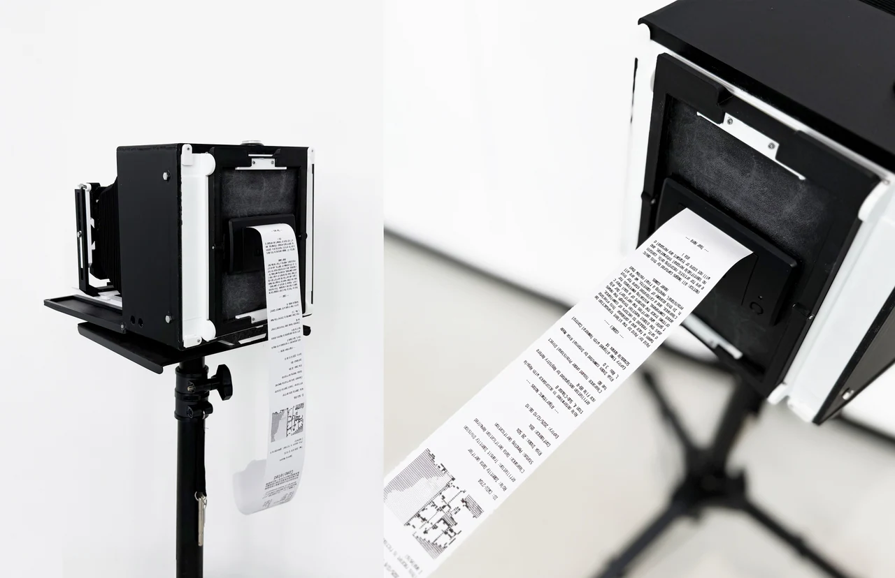
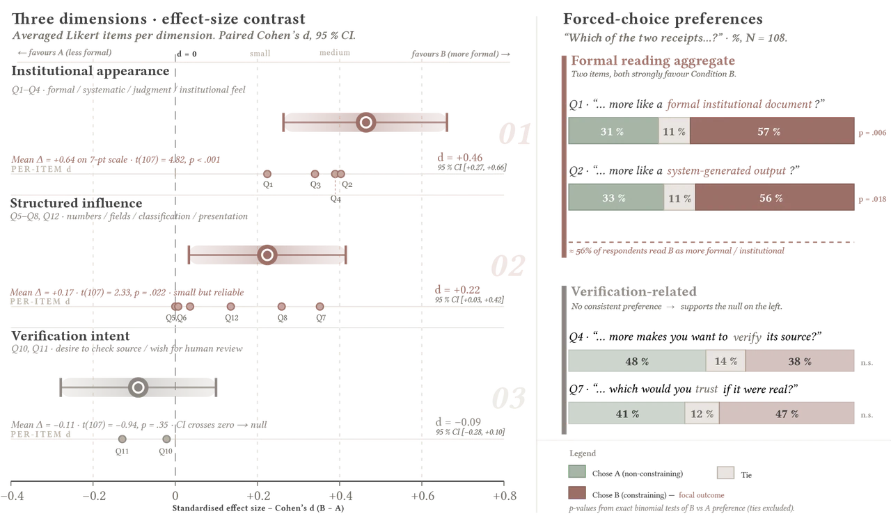
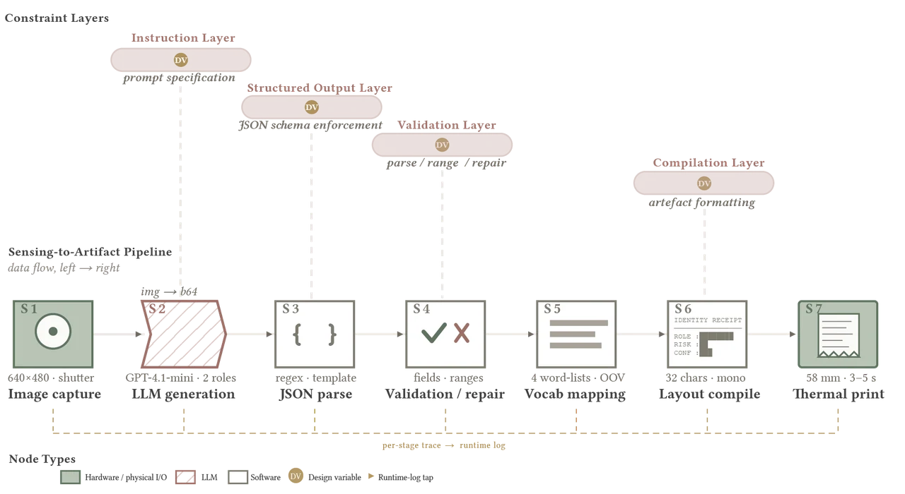
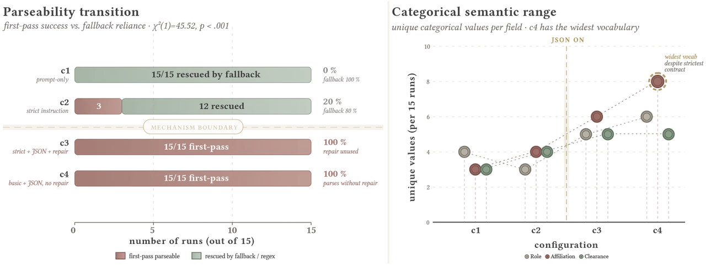
Reflection
- Examines how a generated judgment changes when it becomes a physical document
- Separates the completion of a record from acceptance of its contents
- Reveals variation hidden behind a consistent administrative layout
- Makes verification, review, and responsibility part of the reading of an AI judgment
- Reimagines portraiture as an encounter with computational classification rather than simple representation